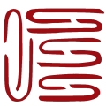
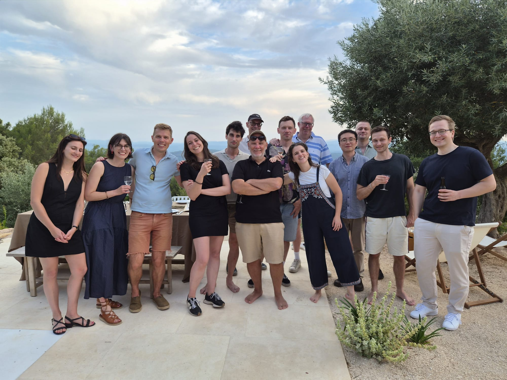
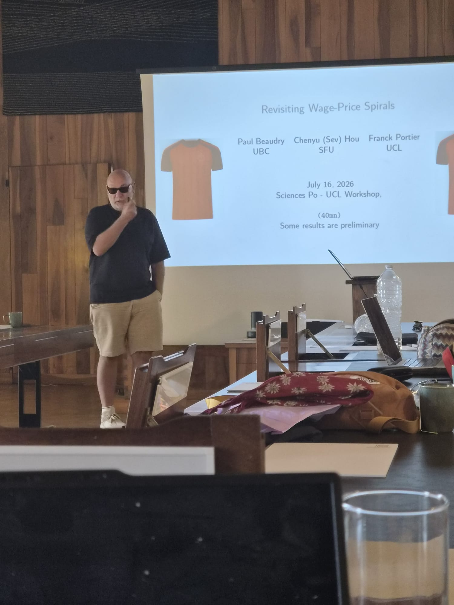
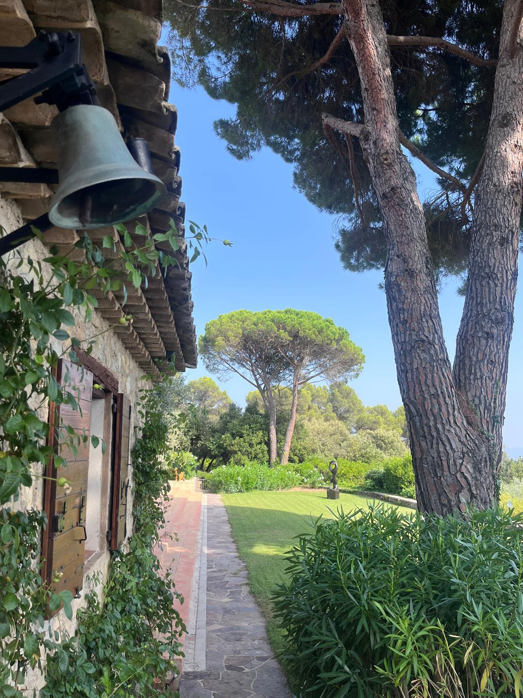
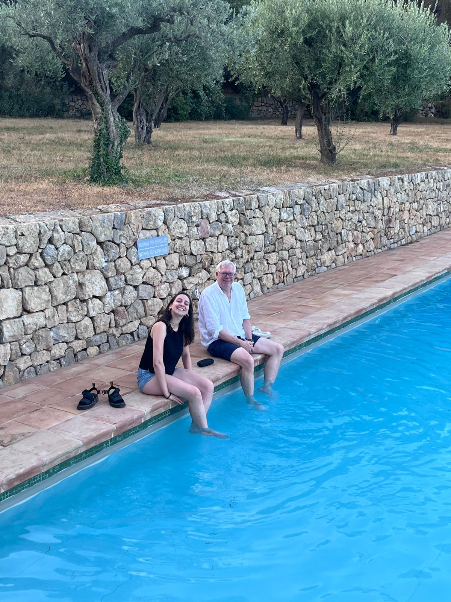

Sciences Po - UCL Macro Workshop, 13-17 July 2026
2026-09-03

From Monday 13 to Friday 17 July 2026, Xavier Ragot and my colleague Vincent Sterk organised a wonderful Sciences Po - UCL macro workshop. The workshop took place at the Fondation des Treilles, close to the beautiful village of Tourtour in Provence.
Participants were Sciences Po and UCL macro faculty plus some closely related people. A lot of good work and fun. Presenters were (in no particular order) Xavier Ragot, Dajana Xhani, Paul Bouscasse, Wei Cui, Kerstin Holzheu, Nathaniel Butler Blondel, Jeanne Commault, Lukasz Rachel, Morgane Richard, Thomas Lazarowicz, Alan Olivi, Franck Portier, Elena Casanovas, Axelle Ferriere, Jean-Marc Robin, Morten Ravn, Adrien Couturier, Joern Onken.
I presented some new work with Paul Beaudry and Sev Hou, “Revisiting Wage-Price Spirals”.
Below are a few photos.



